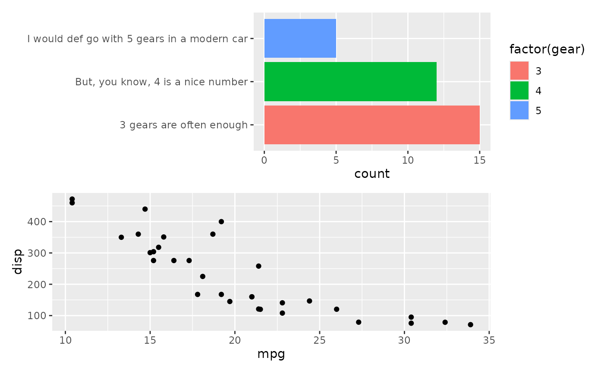
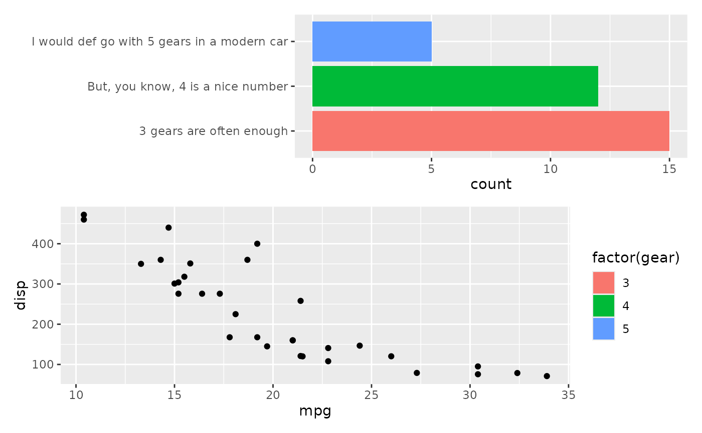
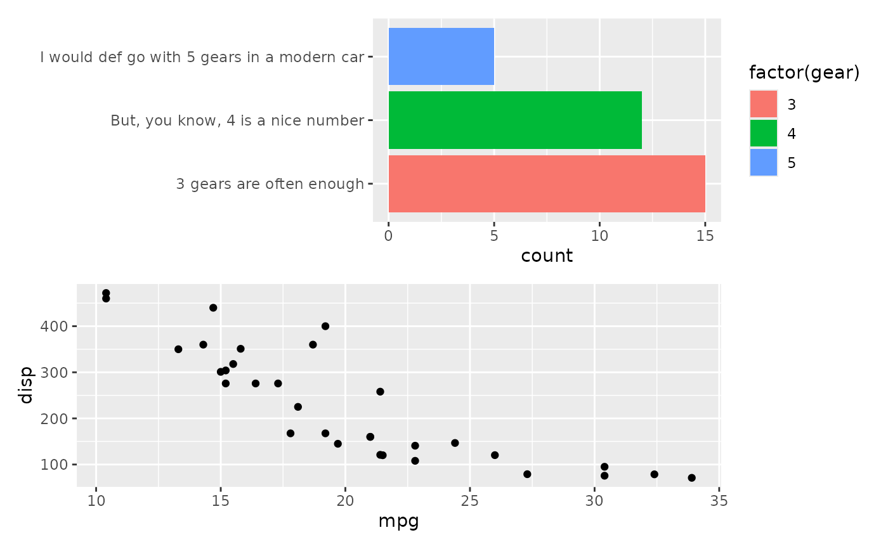
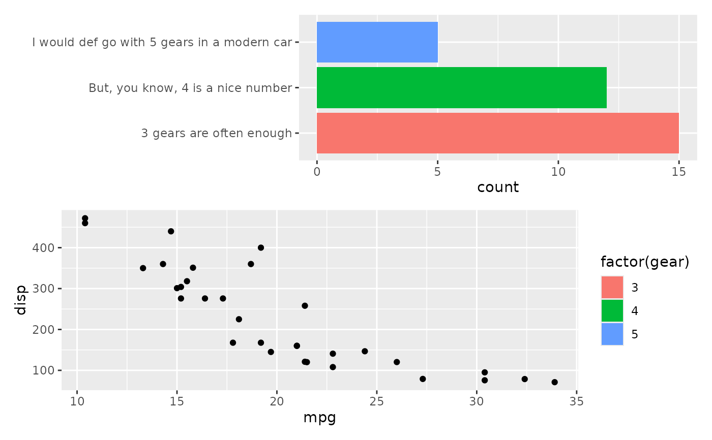
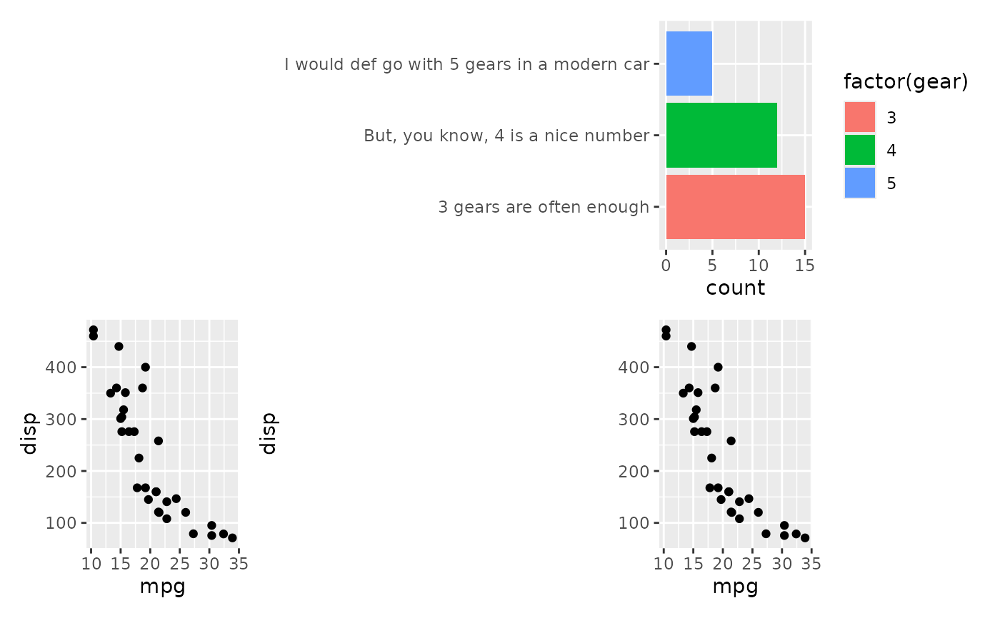
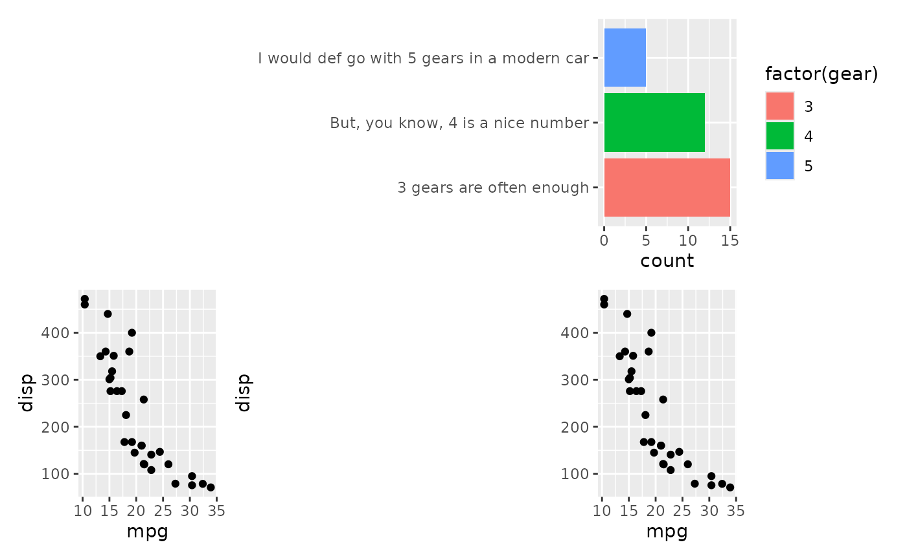

While the purpose of patchwork is often to align plots by their panels,
sometimes this doesn't cut it and we want to compose plots without alignment.
The free() function tells patchwork to treat the content (which can either
be a ggplot or a patchwork) specially and not align it with the remaining
panels in the composition. It works much like using wrap_elements() but has
a few niceties. For starter, it is less verbose, both with a shorter name,
but also without the need to use the full argument rather than the first.
Second, A plot wrapped with free() retains all of it's behavior from
before. You can still add stuff to it, change it's theme, etc., but more
importantly you can still collect guides and recurse tags as usual. A further
nicety is that margins of the plot behave as expected and is aligned with the
other plots in the composition.
Usage
free(x, type = c("panel", "label", "space"), side = "trbl")Details
free() has multiple modes depending on what you are needing:
The default "panel" will allow the panel area to ignore alginment with the
remaining plots and expand as much as needed to fill any empty space.
The "label" type will instead free the axis label to keep its proximity to
the axis, even if a longer axis text from another plot would push them apart.
The "space" type also keeps axis and title together, but will instead not
reserve any space for it. This allows the axis to occupy space in an
otherwise empty area without making additional space available for itself.
Examples
# Sometimes you have a plot that defies good composition alginment, e.g. due
# to long axis labels
library(ggplot2)
p1 <- ggplot(mtcars) +
geom_bar(aes(y = factor(gear), fill = factor(gear))) +
scale_y_discrete(
"",
labels = c("3 gears are often enough",
"But, you know, 4 is a nice number",
"I would def go with 5 gears in a modern car")
)
# When combined with other plots it ends up looking bad
p2 <- ggplot(mtcars) + geom_point(aes(mpg, disp))
p1 / p2
 # We can fix this be using free (here, with the default "panel" type)
free(p1) / p2
# If we still want the panels to be aligned to the right, we can choose to
# free only the left side
free(p1, side = "l") / p2

# We can still collect guides like before
free(p1) / p2 + plot_layout(guides = "collect")

# We could use "label" to fix the layout in a different way
p1 / free(p2, "label")
# We can fix this be using free (here, with the default "panel" type)
free(p1) / p2
# If we still want the panels to be aligned to the right, we can choose to
# free only the left side
free(p1, side = "l") / p2

# We can still collect guides like before
free(p1) / p2 + plot_layout(guides = "collect")

# We could use "label" to fix the layout in a different way
p1 / free(p2, "label")
 # Another issue is that long labels are not using already available free
# space.
plot_spacer() + p1 + p2 + p2

# This can be fixed with the "space" type
plot_spacer() + free(p1, "space", "l") + p2 + p2
# Another issue is that long labels are not using already available free
# space.
plot_spacer() + p1 + p2 + p2

# This can be fixed with the "space" type
plot_spacer() + free(p1, "space", "l") + p2 + p2